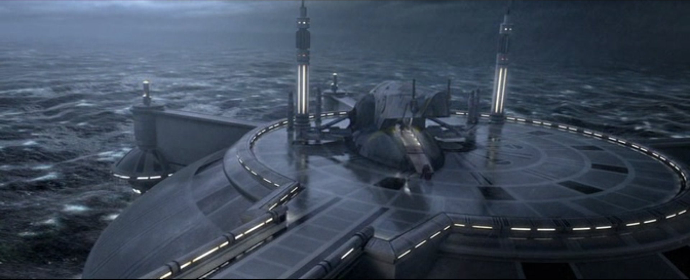

Plagát filmu v Amerike
Plagát filmu v Amerike
Film bol uvedený do kinosál v Spojených štátoch 16. mája 2002.
Získala protichodné recenzie, pričom niektorí kritici ho volali ako vylepšenie
oproti jeho predchodcovi
The Phantom Menace a iní ho považovali za najhorší diel Star Wars.
Film bol ocenený za zvýšený dôraz na akciu, vizuálne efekty, hudobné skóre a návrh kostýmov,
kritizoval sa však scenár, výkon Christensena, romantické scény a nedostatočne rozvinuté postavy.
V pokladni si počínal dobre a na celom svete zarobil viac ako 653 miliónov dolárov.
| Obi Wan Kenobi a Anakin | Clone troopers nastupujú na vesmirnu lod |

|
|
| Vodná planéta KAMINO | Púštná planéta TATOOINE |
|  | |
| Scéna prenasledovania hitmana | Továreň na droidov |

|
Principiálne fotografie sa nafotili medzi 26. júnom 2000 a 20. septembrom 2000 vo Fox Studios Australia v Sydney. Lokality natáčania boli tuniská púšť, námestie Plaza de España v Seville, Londýn, Čína, Vancouver, San Diego a Taliansko (Villa del Balbianello pri Komskom jazere a v bývalom kráľovskom paláci Caserta).